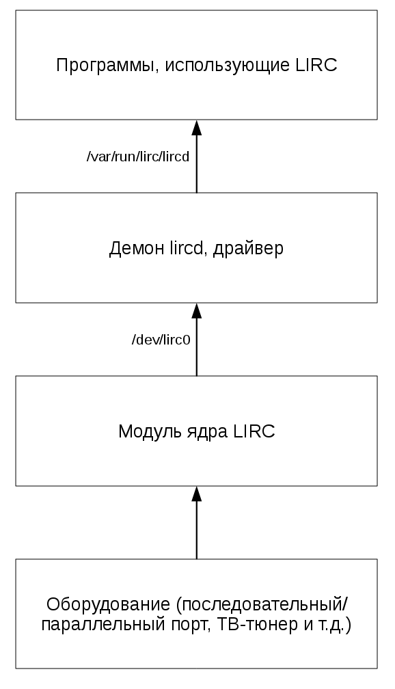
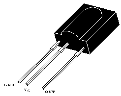
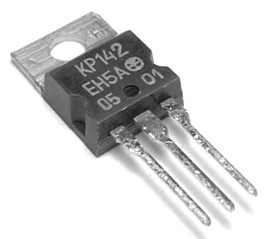
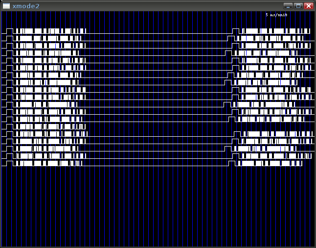
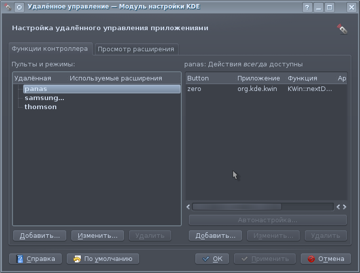

Управление Linux с помощью LIRC
Журнал «Системный администратор» №1-2 2010 г.
Если вы хотите использовать ваш ПК в качестве медиацентра, хотите смотреть фильмы и слушать музыку не вставая с дивана, вам нужен LIRC!
Что такое LIRC?
LIRC (Linux Infrared Remote Control) — набор драйверов и программ для ОС Linux, предназначенный для приема сигналов от инфракрасных пультов дистанционного управления (ПДУ), передачи таких сигналов, а также для управления другими программами с этих пультов. LIRC поддерживает большое количество приемников/передатчиков сигнала и почти любой ПДУ.
Упрощенная схема работы LIRC изображена на рис.1:

Рис. 1
Сигналы от ПДУ принимаются приемником и с помощью модуля ядра отображаются на виртуальное устройство /dev/lircX. Первый загруженный драйвер использует устройство /dev/lirc0, следующий — /dev/lirc1 и т.д. Эти сигналы декодируются демоном lircd, к которому могут подключаться другие программы через сокет /var/run/lirc/lircd. Программы, входящие в LIRC, такие как irexec, irxevent, а также любые другие, могут читать декодированные сигналы непосредственно из этого сокета а также с помощью библиотеки liblircclient.
Простейший приемник
Тот, кто дружит с паяльником, без труда сможет собрать дешевый приемник ИК-сигналов, подключающийся к последовательному порту компьютера. Схема его изображена на рис.2
Рис. 2
Сигналы с ПДУ принимаются датчиком IC1 и поступают на вход DCD последовательного порта. Питание для датчика берется с выхода RTS порта, но поскольку ему нужно напряжение +5В, а на выходах стандартного COM-порта напряжение около 10-12 В, то на элементах IC2, R1, D1 и C1 собран преобразователь напряжения 12В — 5В (для работы IC2 нужно входное напряжение не менее 7В, поэтому на некоторых ноутбуках, где на выходах последовательного порта меньшее напряжение, схема работать не будет). На схеме приведена разводка разъема последовательного порта с 9 выводами, если у вас 25-портовый разъем, то на нем DCD — 8 вывод, GND — 7-й, а RTS — 4-й.
Датчик IC1 — марки TSOP 1738 или аналогичный (полный список можно найти на странице http://www.lirc.org/receivers.html), рис.3

Рис. 3
(Инфракрасный датчик TSOP1738. Выпуклость должна быть обращена к источнику сигналов). Вместо 78L05 (IC2) можно взять советский аналог КР142ЕН5 (левый вывод — вход, правый — выход, средний — заземляем) (рис.4)

Рис. 4
Диод D1 подойдет любой.
Я собрал свой приемник навесным монтажом в корпусе старой мыши (рис.5):
Рис. 5
Установка
Для установки LIRC можно использовать два варианта: сборка из исходных текстов или установка из готовых пакетов вашего дистрибутива.
Установка из исходных текстов подробно описана в документации на странице http://www.lirc.org/install.html. Я же устанавливал LIRC на свой Ubuntu 9.10 из менеджера пакетов. Просто установите lirc и lirc-x со всеми зависимостями. Вы обнаружите у себя необходимые утилиты и демоны, а также документацию в каталоге /usr/share/doc/lirc/html. Драйверов в этих пакетах нет, они включены в стандартное ядро.
Настройка LIRC
Настройка LIRC сводится к ручной правке некоторого количества конфигурационных файлов.
В первую очередь нужно определиться с модулем ядра принимающего устройства. В документации приведена таблица поддерживаемого оборудования (/usr/share/doc/lirc/html/table.html), где можно узнать необходимый вам модуль ядра, драйвер и типы ПДУ, которые данный приемник поддерживает (следует учесть, что некоторые приемники поддерживают любые пульты, а некоторые только те, которые поставляются с ними в комплекте, в таблице они обозначаются «bundled»).
К моему настольному компьютеру я подключал самодельный приемник, а на ноутбуке настраивал встроенный инфракрасный порт (IrDA).
В первом случае нужно использовать модуль ядра lirc_serial:
oleg@oleg-laptop:~$ sudo modprobe lirc_serial
По умолчанию используется первый последовательный порт /dev/ttyS0, но вы можете это изменить, задав явно адрес и прерывание порта:
|
1 |
oleg@oleg-laptop:~$ sudo modprobe lirc_serial io=0x2f8 irq=3 |
Все параметры модуля можно посмотреть с помощью команды modinfo:
oleg@oleg-laptop:~$ modinfo lirc_serial
filename: /lib/modules/2.6.31-16-generic/kernel/ubuntu/lirc/lirc_serial/lirc_serial.ko
license: GPL
author: Ralph Metzler, Trent Piepho, Ben Pfaff, Christoph Bartelmus, Andrei Tanas
description: Infra-red receiver driver for serial ports.
srcversion: B438F3E79E374F0A09BD6FC
depends: lirc_dev
vermagic: 2.6.31-16-generic SMP mod_unload modversions 586
parm: type:Hardware type (0 = home-brew, 1 = IRdeo, 2 = IRdeo Remote, 3 = AnimaX, 4 = IgorPlug) (int)
parm: io:I/O address base (0x3f8 or 0x2f8) (int)
parm: irq:Interrupt (4 or 3) (int)
parm: share_irq:Share interrupts (0 = off, 1 = on) (bool)
parm: sense:Override autodetection of IR receiver circuit (0 = active high, 1 = active low ) (bool)
parm: txsense:Sense of transmitter circuit (0 = active high, 1 = active low ) (bool)
parm: softcarrier:Software carrier (0 = off, 1 = on) (bool)
parm: debug:Enable debugging messages (bool)
Здесь есть важный параметр type, который определяет тип приемника, подключенного к последовательному порту (в нашем случае — 0). Один раз я долго не мог понять, почему не работает прием, пока явно не задал тип приемника.
Иногда модуль не загружается, поскольку последовательный порт уже занят:
oleg@oleg-laptop:~$ sudo modprobe lirc_serial
FATAL: Error inserting lirc_serial (/lib/modules/2.6.31-16-generic/kernel/ubuntu/lirc/lirc_serial/lirc_serial.ko): Device or resource busy
В таком случае установите пакет setserial и попробуйте такую команду:
oleg@oleg-laptop:~$ sudo setserial /dev/ttyS0 uart none
После этого модуль должен загрузиться.
Примечание: Если вы используете команду fuser для того, чтобы определить, какой процесс блокирует последовательный порт, у вас ничего не выйдет. Как указано в документации к LIRC, ядро Linux использует для последовательных портов стандартный драйвер в виде модуля или встроенный в ядро. Этот драйвер «захватывает» все порты, которые обнаружит, и поэтому драйверы LIRC (модули ядра) не могут эти порты использовать. Можно загрузить модуль LIRC раньше модуля ядра для стандартного COM-порта, но проблема в том, что обычно стандартный драйвер последовательного порта не компилируется как модуль! Поэтому необходимо использовать setserial, который освобождает захваченный порт.
Однако, эти изменения сохраняются только до перезагрузки компьютера, а вам нужно будет обеспечить запуск setserial при каждой загрузке до запуска LIRC. Обычно это настраивается автоматически при установке пакета setserial, в таком случае в файл /var/lib/setserial/autoserial.conf добавьте строку:
/dev/ttyS0 uart none
Если автоматическая настройка у вас не прошла, попробуйте другой способ, добавив «setserial /dev/ttyS0 uart none» в файл /etc/init.d/boot.local. Будьте внимательны — в некоторых дистрибутивах скрипт для запуска LIRC /etc/init.d/lirc запускает setserial самостоятельно.
Для встроенного инфракрасного порта мне пришлось зайти в BIOS ноутбука и принудительно задать ему режим IrDA и второй последовательный порт (io=0x2f8). После чего загружаем модуль lirc_sir:
oleg@oleg-laptop:~$ sudo modprobe lirc_sir io=0x2f8
Проверяем, все ли нормально:
oleg@oleg-laptop:~$ lsmod | grep lirc
lirc_sir 15268 0
lirc_dev 10804 1 lirc_sir
Как видите, должен автоматически загрузиться и модуль lirc_dev.
Если вы передаете модулю параметры, то вам нужно сделать так, чтобы они задавались автоматически. Для этого в каталоге /etc/modprobe.d создайте файл имя_модуля.conf и пропишите в нем необходимые параметры, например /etc/modprobe.d/lirc_serial.conf:
options lirc_serial io=0x2f8 type=0
После этого ваш модуль будет автоматически загружаться с заданными параметрами.
После того, как модули были успешно загружены, можно проверить работоспособность приемника с помощью программ mode2 или xmode2:
oleg@oleg-laptop:~$ sudo xmode2 -d /dev/lirc0
Эти программы читают информацию из устройства, указанного вами, и отображают ее на экране, mode2 — в текстовом, а xmode2 — в графическом виде. У вас должно получиться примерно как на рис.6, это значит, что приемник работает!

Рис. 6
Теперь нам нужно настроить демон lircd, который занимается декодированием сигналов, поступающих с приемника, в названия нажатых клавиш ПДУ.
Для конфигурации lircd используются два файла: /etc/lirc/hardware.conf, который отвечает за настройку приемника, и /etc/lirc/lircd.conf, содержащий профили ПДУ, использующиеся с приемником.
Файл /etc/lirc/hardware.conf простой и достаточно прокомментированный, поэтому настроить его не составит труда, у меня вышел такой файл (для IrDA, встроенного в ноутбук):
#Пульт, можно вписать любое название
REMOTE="panasonic"
#Список автоматически загружаемых модулей
REMOTE_MODULES="lirc_sir"
#Драйвер (см.таблицу /usr/share/doc/lirc/html/table.html)
REMOTE_DRIVER="default"
#Устройство, с которого считывать сигнал
REMOTE_DEVICE="/dev/lirc0"
REMOTE_SOCKET=""
REMOTE_LIRCD_CONF=""
REMOTE_LIRCD_ARGS=""
#Передатчик
TRANSMITTER="None"
TRANSMITTER_MODULES=""
TRANSMITTER_DRIVER=""
TRANSMITTER_DEVICE=""
TRANSMITTER_SOCKET=""
TRANSMITTER_LIRCD_CONF=""
TRANSMITTER_LIRCD_ARGS=""
#Запускать lircd?
START_LIRCD="true"
#Автоматически загружать модули
LOAD_MODULES="true"
Обязательно нужно задать параметры REMOTE_MODULES, REMOTE_DRIVER, REMOTE_DEVICE.
Файл /etc/lirc/lircd.conf должен соответствовать вашему ПДУ. Несколько готовых файлов устанавливаются вместе с пакетом lirc, также огромная база ПДУ есть на сайте LIRC (http://www.lirc.org/remotes/). Возьмите файл с профилем вашего пульта и скопируйте его в файл /etc/lirc/lircd.conf. Если же вашего пульта в базе нет, не отчаивайтесь, вы можете настроить его вручную с помощью команды irrecord:
oleg@oleg-laptop:~$ sudo irrecord -d /dev/lirc0 lg.conf -n
Вам будет предложено понажимать все клавиши на ПДУ, а затем задать название для каждой клавиши. Если что-то пойдет не так, попробуйте ту же команду с дополнительным параметром -f, который заставит irrecord не дешифровать коды, получаемые с пульта, что может помочь с некоторыми ПДУ. На выходе у вас будет файл, имя которого вы задали, вам останется всего лишь скопировать его в файл /etc/lirc/lircd.conf. Формат этого файла разбирать не будем, скажу лишь, что в нем может находиться описание сразу нескольких пультов, но у них должны быть разные названия.
Все готово, можно запускать демон lircd:
oleg@oleg-laptop:~$ sudo service lirc start
* Loading LIRC modules [ OK ]
* Starting remote control daemon(s) : LIRC [ OK ]
Если что-то пошло не так, еще раз проверьте конфигурационные файлы /etc/lirc/lircd.conf и /etc/lirc/hardware.conf.
Если демон запустился, можно проверить его работу программой irw, которая читает из сокета /var/run/lirc/lircd названия нажатых клавиш пульта. Просто запустите программу и попробуйте понажимать клавиши:
oleg@oleg-laptop:~$ irw
0000bffbf6fffff6 00 stop panas
0000bffbf6ff3f36 00 ff panas
0000bffbf6ff535a 00 down panas
0000bffbf6ff939a 00 vtr/tv panas
0000bffbf6fffff6 00 stop panas
0000bffbf6fffff6 01 stop panas
В выводе программы первая колонка — код клавиши из файла /etc/lirc/lircd.conf, вторая — количество повторений нажатия, третья — название клавиши, четвертая — название ПДУ.
Демон lircd настроен.
Использование LIRC
Теперь нам нужно настроить программы, которые будут управляться вами при помощи пульта управления. Есть два типа таких программ: те, которые поддерживают управление через lirc, и те, которые о нем ничего не знают.
Проще всего настроить программы первого типа. Они используют библиотеку liblircclient и файл настройки ~/.lircrc. Этот файл состоит из таких секций:
begin
prog = ...
remote = ...
button = ...
[button = ...]
repeat = ...
delay = ...
config = ...
[config = ...]
mode = ...
flags = ...
end
begin mode
...
end mode
begin
flags = startup_mode
mode = browser
end
Файл .lircrc может получиться достаточно объемным, поэтому удобно будет разбить его на части и подключать их при помощи директивы include:
|
1 |
include ~/.lirc/xawtv |
Давайте для примера сконфигурируем проигрыватель mplayer. Список команд для него можно получить, набрав
oleg@oleg-laptop:~$ mplayer -input cmdlist
Запишем такой код в файл .lircrc (допустим, у нас есть пульт с названием ‘panas’):
begin
remote = panas
prog = mplayer
button = operate
config = quit
end
begin
remote = panas
prog = mplayer
button = reset
config = vo_fullscreen
end
begin
remote = panas
prog = mplayer
button = up
config = volume +10
repeat = 1
end
begin
remote = panas
prog = mplayer
button = down
config = volume -10
repeat = 1
end
begin
remote = panas
prog = mplayer
button = pause
config = pause
end
begin
remote = panas
prog = mplayer
button = ff
config = seek +30 0
repeat = 1
end
begin
remote = panas
prog = mplayer
button = rew
config = seek -30 0
repeat = 1
end
Как вы видите, в каждой секции задается пульт строкой remote=panas, программа prog=mplayer, кнопка пульта button, и действие config, соответствующее указанной кнопке. Для повторяющихся кнопок, таких как увеличение и уменьшение громкости, обязательно задаем repeat=1, то есть когда мы держим кнопку нажатой, строка config передается в программу постоянно.
Примечание: если вы хотите облегчить создание файла конфигурации, попробуйте программу mythbuntu-lirc-generator. Она попытается самостоятельно создать конфигурационные файлы для программ mplayer, elisa, mythtv, totem, vlc, xine, xmame и xmess, используя файл конфигурации вашего ПДУ /etc/lirc/lircd.conf
Все эти секции распознаются уже работающей программой mplayer, но ее еще нужно запустить. Тут нам на помощь придет программа irexec. Она предназначена для запуска других программ с помощью ПДУ.
Задайте в файле ~/.lircrc секцию для irexec следующим образом:
begin
remote = panas
button = vtr/tv
prog = irexec
config = gmplayer &;
end
Далее, следует запустить саму программу irexec в режиме демона:
oleg@oleg-laptop:~$ irexec -d
Нам нужно сделать, чтобы она запускалась автоматически при входе в систему, например выбрав «Система — Параметры — Запускаемые приложения» в настройках Gnome и добавив в список запускаемых программ irexec -d.
Теперь при нажатии кнопки vtr/tv пульта panas будет запущен gmplayer.
Касательно программ, которые не поддерживают LIRC напрямую. Если они могут управляться с клавиатуры, то используем программу irxevent, если же нет, то в LIRC есть эмулятор мыши.
Программа irxevent позволяет эмулировать нажатие клавиш клавиатуры или кнопок мыши. Конфигурируется она опять же через файл ~/.lircrc таким образом:
begin
remote = panas
button = display
prog = irxevent
config = Key F CurrentWindow
end
То есть в данном случае нажатие клавиши F отправляется в текущее окно
Клавиши можно задавать так:
[shift-][numlock-][ctrl-][alt-][meta-][mod3-][mod4-][scrlock-]Keyname
Например: ctrl-c, SHIFT-KP_Subtract и т.д. Названия клавиш берутся из файла /usr/include/X11/keysymdef.h. Кроме того, можно посылать нажатия не только в текущее окно, но и в любое другое, поставив вместо CurrentWindow имя окна или его идентификатор. Их можно узнать с помощью программы xwininfo.
Нажатия кнопок мыши эмулируются так:
config = Button 1 15 95 Mplayer
где 1 — номер кнопки мыши, а 15 и 95 — координаты курсора, в которых производится нажатие.
Опять же, программу irxevent после настройки следует запустить как демон:
oleg@oleg-laptop:~$ irxevent -d
Замечу, что irxevent работает не очень надежно, поэтому иногда лучше использовать xdotool. Она позволяет передавать целые строки другим программам, перемещать курсор мыши и даже переключать рабочие столы. Просто установите пакет xdotool и задайте конфигурацию для него через программу irexec:
begin
remote = panas
button = display
prog = irexec
config = xdotool key ctrl+alt+n
end
Здесь комбинация клавиш посылается в текущее окно. Если вам нужно отправить несколько клавиш в определенное окно, можно использовать xdotool в скриптах. Вот пример из документации, который позволяет вставить в адресную строку firefox содержимое буфера обмена:
#!/bin/sh
# Activate firefox and paste the clipboard contents into the url bar.
wid=`xdotool search --title "Mozilla Firefox"`
xdotool windowactivate $wid
sleep 0.2
xdotool key "ctrl+j"
xdotool key "BackSpace"
xdotool key "ctrl+v"
xdotool key "Return"
Ну и в совсем крайнем случае, если программа, которой вы хотите управлять, не поддерживает горячие клавиши, вам придется эмулировать мышь с помощью демона lircmd, для этого нужно будет повозиться, но результат этого стоит.
Сначала сконфигурируем lircd, добавив в файл /etc/hardware.conf строку
START_LIRCMD="true"
Это заставить компьютер запускать lircmd при старте lircd.
Затем нужно составить файл конфигурации /etc/lirc/lircmd.conf для демона lircmd. Он состоит из следующих инструкций:
PROTOCOL protocol
Выбор протокола мыши. Можно выбирать между MouseSystems, IntelliMouse и IMPS/2. Лучше выбрать IntelliMouse, так как он поддерживает колесо.
ACCELERATOR start max multiplier
Обычно курсор мыши передвигается на один пиксел при каждом нажатии кнопки на пульте, но это очень медленно. При использовании этой инструкции если вы будете удерживать кнопку управления курсором, то скорость перемещения будет увеличиваться после того, когда количество повторов достигнет значения start, до значения repeat*multiplier, но не более max.
ACTIVATE remote button
или
TOGGLE_ACTIVATE remote button
Задает кнопку пульта, после нажатия которой включается режим эмуляции мыши. При этом курсор проделает на экране небольшой круг, сигнализируя о включении режима. Если вы используете ACTIVATE, то режим отключается нажатием любой кнопки пульта, которая отсутствует в конфигурационном файле и не задействуется в эмуляции, если же используется TOGGLE_ACTIVATE, то выключение режима производится той же кнопкой, что и включение.
MOVE_[ N [ E | W ] | E | S [ E | W ] | W ] remote button
Задает кнопку пульта для перемещения курсора мыши в указанном направлении:
NW N NE
W X E
SW S SE
MOVE_[IN|OUT] remote button
Задает кнопку пульта для вращения колеса мыши вверх и вниз соответственно.
BUTTONx_CLICK remote button
Назначает кнопку пульта для нажатия кнопки мыши (x=1 — левая кнопка, x=2 — средняя, x=3 — правая).
В этом файле использование * вместо названия ПДУ означает выбор любого пульта для управления.
Вот приблизительно что вышло у меня:
PROTOCOL IntelliMouse
ACCELERATOR 2 30 5
ACTIVATE * rec
MOVE_N * 2
MOVE_NE * 3
MOVE_E * 6
MOVE_SE * 9
MOVE_S * 8
MOVE_SW * 7
MOVE_W * 4
MOVE_NW * 1
BUTTON1_CLICK * recall
BUTTON2_CLICK * 0
BUTTON3_CLICK * enter
MOVE_IN * up
MOVE_OUT * down
Можно перезапускать lirc:
oleg@oleg-laptop:~$ sudo service lirc restart
* Stopping remote control mouse daemon: LIRCMD [fail]
* Stopping remote control daemon(s): LIRC [ OK ]
* Loading LIRC modules [ OK ]
* Starting remote control daemon(s) : LIRC [ OK ]
* Starting remote control mouse daemon : LIRCMD [ OK ]
Но это еще не все, теперь осталось подключить нашу виртуальную мышь к серверу Xorg. Для этого добавим в файл /etc/X11/xorg.conf следующую секцию:
Section "InputDevice"
Identifier "LIRC-Mouse"
Driver "mouse"
Option "Device" "/var/run/lirc/lircm"
Option "Protocol" "IntelliMouse"
Option "SendCoreEvents"
Option "Buttons" "5"
Option "ZAxisMapping" "4 5"
EndSection
Затем в секцию ServerLayout нужно добавить такую строку к уже имеющимся:
InputDevice "LIRC-Mouse"
После чего в секцию ServerFlags добавим
Option "AllowEmptyInput" "false"
У вас может возникнуть проблема в том, что последние версии Xorg работают вообще без конфигурационного файла, как у меня. Тогда нужно будет его создать. Выйдите из Xorg и запустите
oleg@oleg-laptop:~$ Xorg -configure
В вашем домашнем каталоге появится файл xorg.conf.new, содержащий конфигурацию Xorg по умолчанию. Скопируйте его в файл /etc/X11/xorg.conf, внесите все необходимые правки и перезагрузите Xorg.
Можно пробовать виртуальную мышь. Сначала нажмите выбранную вами клавишу для включения режима эмуляции, затем попробуйте подвигать курсором. Если что-нибудь у вас не получается, в первую очередь проверьте, запустился ли lircmd, проверьте, существует ли файл /var/run/lircm, и наконец, проверьте логи Х-сервера.
Программы с графическим интерфейсом
Для Gnome есть программа для настройки LIRC в графическом режиме без правки конфигурационных файлов, но возможности ее зачаточны, и толком ничего настроить я не смог.
Если вы используете KDE, попробуйте очень неплохую программу IrKick (находится в пакете kdelirc). Она позволяет назначать действия клавишам пультов в графическом режиме (рис.7), но lircd уже должен быть настроен, то есть IrKick можно рассматривать как замену ~/.lircrc+irexec+irxevent для KDE.

Рис. 7
В ней можно использовать несколько пультов, для каждого из которых можно создать несколько режимов. Кроме запуска других программ, можно посылать сообщения по DBus запущенным приложениям KDE, для чего существует удобный мастер настройки; также есть модули расширения, позволяющие управлять Amarok, Konqueror, регулировать звук, выключать компьютер и др.
Передача инфракрасных сигналов
Если у вас есть не только приемник, но и передатчик ИК-сигналов, то с помощью LIRC можно и передавать инфракрасные сигналы управления, используя компьютер в качестве универсального ПДУ. К самодельному приемнику можно легко добавить ИК-диод, а если у вас IrDA-порт в ноутбуке, то передатчик у вас уже есть.
Передача сигналов реализуется программой irsend:
|
1 |
irsend DIRECTIVE REMOTE BUTTON [BUTTON...] |
Например:
|
1 |
oleg@oleg-laptop:~$ irsend SEND_ONCE panas operate |
LIRC для Windows
Существует реализация LIRC для Windows, которая называется WinLIRC. Правда, она давно не обновлялась, но работает. Существенный ее недостаток — это поддержка только самодельных приемников, подключаемых к последовательному порту. WinLIRC поддерживается некоторыми популярными программами, например, WinAMP, BSPlayer, VLC, LightAlloy и т.д.
Конфигурирование WinLIRC сводится к обучению ее вашему пульту. Если вы нашли подходящий конфигурационный файл для вашего ПДУ, можете попробовать его. WinLIRC сидит в трее и мигает значком при нажатии кнопок на пульте. Сторонние программы взаимодействуют с ней через TCP по адресу 127.0.0.1:8765.
В заключение
Надеюсь, ваша борьба с конфигурационными файлами LIRC завершится победой, и вы почувствуете неимоверное удобство этого инструмента. Пишите, постараюсь ответить на все вопросы. Успехов!
Ссылки